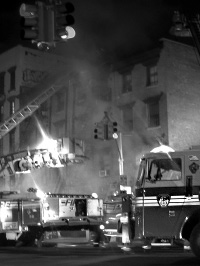
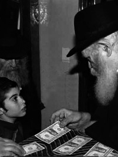
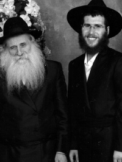

Resurrection of the Dead on Motzaei Purim

The experience Rabbi Benzion refers to was a tremendous miracle in which his and his brother’s lives were saved. Every year, on the day marking the miracle, he retells the story.
PESACHYA WAS IN THE BURNING HOUSE
Purim 5749.
Purim is a day packed with mitzvos, acts of chesed, and mishloach manos, in addition to the mitzvos of the Megilla and feasting and going on mivtzaim. For those living in Crown Heights in the Rebbe’s presence, there were also t’fillos and the Megilla reading with the Rebbe. That year, Purim fell out on a Tuesday. There were two sichos from the Rebbe and then, with an especially glowing countenance, he distributed dollars for tz’daka.
That was, more or less, the busy day that Benzion had. He was a young boy at the time of this story, about half a year after his bar mitzva. Following the morning reading of the Megilla in the Rebbe’s minyan, he delivered his family’s mishloach manos. Then, as the class representative, he delivered mishloach manos to his teacher, Rabbi Nachman Yosef Twerski. Later in the day he enjoyed the Purim seuda with his family.
The Rebbe said two sichos, one after Mincha and another on Motzaei Purim after Maariv. Then his family went to Flatbush to attend another Purim seuda with Mrs. Korf’s family.
No wonder then, that when he returned home he recited Krias Shma and fell exhausted into bed. His father, the mashpia Reb Pinye, and his older brothers, went to farbrengens in the neighborhood in order to continue to draw upon the great spiritual treasures available on Purim.
Benzion doesn’t know how long he slept when he heard his mother screaming, “Fire!” He hadn’t heard the smoke alarm that began chirping loudly a few moments earlier. His younger brothers continued sleeping. It was only their mother who woke up to the sound of the alarm and saw the flames.
Benzion jumped out of bed. “I just got up and ran. I didn’t think anything, just about fleeing the flames. I left my glasses on the table as well as my new t’fillin.”
His five year old brother Berel woke up and ran out of the house. It all happened extremely quickly. “At a time like that, there isn’t much time to think. It was only after we had left the house that we realized to our horror that my eight year old brother Pesachya was still indoors. We wanted to go back in and get him, but the house had filled with smoke and it was impossible to enter.”
The Korf family knocked on their neighbors’ door. Their neighbor Rabbi Yehuda Benchemhoun tried to enter the house, but the smoke made it to dangerous to enter. Reb Pinye and the older brothers were at farbrengens and nobody knew precisely where they were.
Fire engines soon filled the street along with people from Hatzalah. Mrs. Korf reported to them about her eight year old who was will inside.
“I was standing on the street in my pajamas. It was very cold. My neighbor, Yossi Piamenta, gave me his coat. I was a skinny thirteen year old while he was many sizes bigger than me, but at a time like that who thinks about such details. My younger brother Berel was taken to the home of Ben-David across the street. I wanted to go to my sister’s house, not far away, but someone dissuaded me, saying I shouldn’t tell her the news so late at night. He took me instead to the home of Rabbi Leibel Groner across the street. The firemen worked a long time on dousing the flames until they finally put it out.
“Rabbi Leibel was a gracious host but how could I sleep after what had happened? Early in the morning I went with him to my house to see what was going on there. I was shocked to see that the fire had been in my room, very close to my bed. Until that point I hadn’t known that, because when I had fled the burning house I hadn’t even seen the fire. I ran out only because of my mother’s screams. Now I saw that the fire had started in my room due to an electrical short. I realized what a miracle it was that I had been saved.
“I was allowed to go inside and I saw that my room was completely burned; nothing remained. Not my new t’fillin, nor the many s’farim I had received as gifts just half a year earlier. That really upset me, as well as the loss of the letter from the Rebbe I had received for my bar mitzva and the diary I had written over the past year and a half which had all the Chassidic stories I heard during that time. (My brother-in-law in Eretz Yisroel called me after the fire to console me. In his subtle humorous way he said that the Chabad Rebbeim and big Chassidim had also suffered fires in which their handwritten manuscripts were destroyed.)
“I called my uncle who lived nearby and asked him to bring me his son’s clothes so I would have something decent to wear. Then I went to Shacharis wearing clothes that didn’t exactly fit me, without my t’fillin and without my glasses. I could hardly see where I was going.
“Later on, Rabbi Groner told me that when he told the Rebbe in the morning what had happened, the Rebbe was very interested in the details, especially about my brother Pesachya.”
THE DOCTORS DESPAIRED
What happened to Pesachya? The Hatzalah members who were there at the time call it an open miracle. Rabbi Pesachya himself had this to say:
“I was also woken up by my mother’s screams. I even saw the fire and began to run. Afterward, we realized there was a series of miracles. That night, it ‘so happened’ that I did not sleep in my bed but in the room next door. The fire had started because of an electrical short, which was right where my head usually was. If I had been in that room, I would have been immediately burned by the flames.
“For some reason, although I ran with the others, I held back for a reason I am not sure about till this day. Then the house suddenly filled with black, choking smoke. You could not see anything. The second miracle is that I went under my mother’s bed without knowing why. It turned out that this location saved my life.
“I quickly lost consciousness. I don’t know what happened next, but they told me later that the firemen arrived long after the fire began. They burst into the house and after extensive searching they found me under the bed. When they took me out, they could not find a pulse. A long time had passed from the time the fire began until they found me.”
The neighbor, Rabbi Yehuda Benchemoun, said that when he saw them take Pesachya out, he knew it was all over. The doctors who were there also said he was a goner.
Hatzalah immediately put him on oxygen. He was brought to Kings County hospital but the doctors said there was nothing they could do.
NIGHT FLIGHT
Yingy Bistritzky of Hatzalah relates:
“Although the doctors despaired, we insisted they continue treating him and do all they could to save him. At a certain point, they said that the only way to remove the smoke and soot from his lungs was by means of a special machine that exerts pressure on the lungs and extracts the junk. It was available only at a hospital in the Bronx, which is forty minutes away. In Pesachya’s precarious condition, it wasn’t possible to drive him there.”
Despite the late hour, Yingy called Rabbi Gluck in Williamsburg and asked him to use his connections to get a helicopter to take Pesachya to the hospital in the Bronx.
“When the doctors saw I had been able to arrange for a helicopter, they informed me that they had another two patients in the hospital that were in critical condition due to smoke inhalation. They asked for a helicopter big enough to take three patients.
“I made some more phone calls and it was arranged. Within a short time, a large helicopter had landed in the park near the hospital where three ambulances were waiting. After a flight of a few minutes, the helicopter landed at the hospital in the Bronx and Pesachya was quickly taken to be hooked up to the machine.
“The treatment stabilized his condition somewhat but the doctors were still pessimistic.”

On the evening of that first day, Wednesday, Motzaei Shushan Purim, the Rebbe said a sicha and then gave out dollars. Most unusually, the Rebbe gave out three dollars to whoever passed by. Among those who were there was Reb Pinye Korf who asked for a bracha for a refua shleima for his son. The Rebbe said, “Refua shleima, u’refua krova” (a complete recovery and a speedy recovery).
After distributing dollars, the Rebbe (as usual) put the identical number of dollars that he had given out into his Siddur. He then waved his hand to encourage the singing and began walking out of the shul. Near the Aron Kodesh two people who had come late stopped the Rebbe. The Rebbe turned to Rabbi Groner who gave him dollars from the bundle he had. The Rebbe continued walking towards the exit.
On the side, not far from the exit, stood Reb Pinye davening Maariv and here is where something extraordinary took place:
When the Rebbe noticed him, he veered from his normal path, turned to Reb Pinye and asked, “Did you take [dollars] for your son?” Reb Pinye, who was in the middle of davening, shook his head no. The Rebbe opened his Siddur and took out the three dollars and gave them to Reb Pinye and said, “Your son should put them in a pushka.”
“That is when my father knew that I would live,” said Rabbi Pesachya.

Reb Pinye arrived at his son’s bed in the middle of the night. It was silent except for the whoosh of the respirator.
“I suddenly heard a voice calling me,” said Rabbi Pesachya. “It said, ‘Pesachya! The Rebbe sent you dollars for you to give to tz’daka.’ I heard this as though in a deep dream, from a faraway world and I got up! I opened my eyes and saw my father standing there with the dollars in his hand. It was two in the morning. With my father’s help, I put the dollars in a pushka.
“Then I heard voices exclaiming, ‘He’s alive! He’s alive!’”
Doctors rushed in and examined him. Then they anesthetized him in order to remove the respirator and on Friday, 17 Adar, he was completely conscious, to the joy of his parents, family, and residents of Crown Heights who had heard the frightening story.
“When I woke up, I remembered that my birthday was the following Thursday. I told my parents that I wanted to go for dollars on Sunday and to get a bracha from the Rebbe for my birthday, as I did every year. My family as well as the doctors and nurses tried to dissuade me, but I insisted. I told my parents that on Sunday I would get a bracha from the Rebbe. The doctors warned me that if I left the hospital, it would be against their medical advice and I would not be allowed to come back for further treatment. I said that it was the Rebbe who had saved my life and not the doctors, and I relied on him.
“My parents had no choice but to sign the form, and Sunday morning I was there for dollars and I asked the Rebbe for a bracha for my birthday. The Rebbe said, ‘Zolst zain a groiser Chassid, a groiser lamdan, a groiser yerei Shamayim’ (You should be a big Chassid, a big scholar, and a big Yerei Shamayim).”
Within a short time, Pesachya had fully recovered. He went back to yeshiva right after Pesach. The doctor who had treated him was invited to his bar mitzva. He spoke and described the hours when none of them believed he would survive, but G-d willed otherwise and he received his life as a gift. The gentile fireman who brought Pesachya out of the burning house was also invited. He was asked to speak but he declined, saying that it was not he who had saved the child but the Rebbe.
Rabbi Benzion concluded the story:
“We need to pay attention to see how Hashem, with His great kindness, fulfills our requests and gives us what we need. If we just open our eyes a bit, we will see divine providence and how, with Hashem’s help, everything ultimately works out. We need to be grateful and thank and praise Hashem for all the good He does for us.”
***
In 5762, about thirteen years after the fire, Pesachya went to downtown Brooklyn for jury duty. He encountered a gentile fireman who was putting out a fire that had broken out in a building in the area. Pesachya asked him whether he knew a fireman by the name of … and the man said he did. Pesachya told him that the fireman in question had saved his life and requested that the man should convey Pesachya’s regards. The fireman asked, “You’re the one the rabbi saved?”
***
For many years, when Pesachya was a boy, he joined his father on mivtzaim on Utica Avenue. People who knew the story would point at Pesachya and say to his father, “He’s not your child; he’s the Rebbe’s child.”
***
Rabbi Pesachya relates:
In 5762 there was a Kinus Achdus in honor of 11 Nissan, and Eastern Parkway was closed for the occasion. As chairs were being set up, I overheard a conversation between two gentile policemen. One of them was apparently newer to the area than the other and he said, “It’s a shame that they are putting in all this effort when it’s going to pour soon.” The veteran replied, “I’ve been working here for many years and I attended many of their parades (referring to Lag B’Omer). When their Rebbe wants it, no rain falls despite the weather forecasts.”
Menachem Ziegelboim. "Resurrection of the Dead on Motzaei Purim." Beis Moshiach, no. 826 (March 7, 2012).